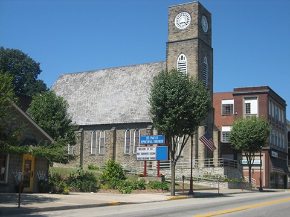

St. Paul's
Episcopal Church, Monongahela 1860
Mrs. Florence Yohe, Historian (updated 2012
by JRG)

Standing at 104 West Maine Street in the
Monongahela business district, St.
Paul’s is the oldest Washington County
church in the mid-Mon Valley. First know as
Parkinson’s Ferry because of
the river crossing service proved by
that family and later called
Williamsport, Monongahela is an old
river town where boat building, coal
mining and steel fabrication dominated
a diverse industrial economy.
Beginning in the 1960’s, the area has
been hit hard by mine and steel plant
closings. Over the years, people of many different
ethnic backgrounds came to the region
and have changed St. Paul’s
once-predominant “Johnny Bull”
membership.
What reach to a large ecumenical
congregation in the Presbyterian
Church. It was almost a year later that
Dr. Lee returned and began occasional
visits that continued through 1862.
During 1862, Fr. Edward M. Van Duesen
of St. Peter’s, Pittsburgh also
visited at Monongahela.
In July1862, the Western
Convocation of the Diocese of
Pennsylvania met in Monongahela, using
the local highschool auditorium.
At this meeting, Fr. William P. TenBroeck
was appointed missionary in the
Valley.
On August 9, 1863, Bishop
William Stevens, coadjutor of the
Diocese of Pennsylvania, made his
first visit and confirmed four. Bishop
Alonzo Potter came in October of that
year and confirmed eight.
In November 1863, Bishop Potter presided
at the Second Western Convocation in
Monongahela. During that time, he
organized the first vestry. Those elected included William Manown, R. M.
Gee, Francis Nelson, James Sheplar,
John Markell, R. L. Robinson and
E. W. Crittenden. At that time, $220 was pledged toward
construction of a sanctuary. Families active in establishing the church
included the Stuarts, Sheplars,
Robinsons, Markells, Parkinsons,
Wests, Keys, Kerns, Collins and Hills.
Father Henry Mackay, who had
been serving Georgetown in the Ohio
Valley, agreed to come to Monongahela
and begin his duties immediately. During
the spring of 1866, not long after his
consecration as the new bishop of the
Diocese of Pittsburgh, John B. Kerfoot
made his first visit to the area. He
brought great encouragement to the new and
uncertain congregation. He
returned September 3, 1866 to lay the
cornerstone of the present church. The
stone, itself, was given by Godfrey Kern, who
owned a nearby quarry. The stone was
cut, dressed and laid by members of
the parish. Father Mackay
resigned his charge in the fall of
1869 to start a new congregation at
Brady’s Bend. Father John Linseka succeeded him in March
1870.
The new sanctuary was completed
during 1870. Gothic in design, with eighteen-inch thick,
gray native stone, the nave was 60 by
36 feet and the chancel 21 by 14 feet.
The congregation used the building for
worship before the interior walnut
wainscoting and other woodwork were
completed. The altar was later
dedicated in memory of Bishop Kerfoot.
When Fr. Linseka was deposed from the
priesthood in October 1871, worship
was suspended until March 1872. At that time, Fr. John P.
Norman, MD was placed in charge. During
May 1872, Bishop Kerfoot visited the
parish and confirmed six. The
tower with its spire and cross was
completed in 1873. While
serving the congregation, Dr. Norman
also practiced medicine, caring for
many poorer community members at no
cost. He continued as vicar until
July 1875, when he took charge of St.
Luke’s, Bloomfield until 1880.
What followed was a period of
rapid clergy turnover at St. Paul,
which saw Frs. Percival Beckett,
Emilius W. Smith and Thomas White come
and go, serving only one or two years. Finally,
in April 1880 Fr. Norman returned to
St. Paul’s and steady growth began. He
obtained an organ and developed a
strong choir. The Christmas and Easter cantatas became
annual civic events. During his long,
stable pastorate, many Pittsburghers
made excursions up river by packet
boat on Sundays to have
picnics at St. Paul’s and attend
Evening Prayer.
On June 9, 1882 St. Paul’s, now
debt-free, was consecrated by Bishop
Whitehead, who confirmed nine. Dr. Norman organized and
sponsored cricket matches and soccer
games. In addition to serving on the
school board, he was active in Masons
and the Grand Army of the Republic,
and still found time to write book
reviews that were published in
Pittsburgh. He established an excellent Sunday school
that numbered more than 100. Something
of a character, the good doctor loved
chewing tobacco and drank his coffee
scalding hot. One year, even with a broken leg he
celebrated the Eucharist and baptized
infants. No other priest served St.
Paul’s so effectively for so long. Along
the Monongahela River he gathered and
ministered to congregations from
Homestead to McKeesport to
Brownsville. He retired at 82 in 1918, dying in 1923.
The Rev. Lewis H. Huber arrived
as pastor in 1918. During
his term, he organized the Boys'
Brigade, St. Agnes Missionary Guild
and St. Paul's Altar Guild. The
first members of the Altar Guild were
Mmes. Huber, W. I. Jones, Charles
Frye, James Crall, Frank Myers,
William Pursglove, T. J. Eckbreth, S.
M. Downer, Morton Collins, Clyde
Albright and James Ternent. Father
Huber also introduced the duplex
envelope system for regular giving to
missions, as well as parish support. Following
Fr. Huber’s resignation in 1920, Fr.
Henry McClellan then served the parish
for three years.
In 1924, Fr. William Bayle came
to St. Paul's. The
parish house was built on the hill
behind and adjoining the church. A
severe coal strike hit the community
and local relief efforts were
coordinated there. The
National church surveyed the local
conditions, bringing added recognition
to the congregation’s community
outreach. During a visit by the
Brothers of St. Barnabas in 1924, the
outdoor manger scene was first
erected. The Brothers came every year at
the start of Advent to preach and
erect the manger for many years. It
is believed to be the oldest manger
scene in continuous use in the Mon
Valley. Father Bayle, an effective if
somewhat crusty character, when
challenged by the spouse of a vestry
member with the question “Who was it
who founded the Episcopal Church?”
replied, “Why, Madame, Jesus Christ
himself.” He
left St. Paul’s in 1927 to become
Archdeacon.
During the Depression and World
War II years, St. Paul’s experienced a
high rate of clergy turnover, with
eight priests coming and going. Arriving
in 1949, Fr. Ward Smith was the first
of a crop of newly ordained young men
who served their first tours of duty
in Monongahela. From
1955-57, Fr. Richard W. Davies served
as vicar. Then,
after 94 years as a mission, the final
debt on the rectory was paid, and St.
Paul's became an independent parish. During
Fr. Davies’ pastorate, St. Paul's
celebrated its 100th anniversary with
publication of an extensive history
entitled, "The Joy of Saints." In
1957, another group of young clergy
with short tenures followed him. Father
Ralph Brooks is remembered because of
his adventures as a volunteer fire
fighter.
During the six-year pastorate
of Fr. Douglas Kierstead in the
mid-1970's, the church was renovated
and the second floor of the parish
hall was divided into seven Sunday
school rooms and a nursery. Sanctuary
renovations included removing the
wainscoting and painting the church
white, in addition to moving the altar
so that the priest could face the
congregation. New
pews, lighting and carpeting were
installed. The
original altar, pulpit, lectern,
Bishop's chair, tabernacle and organ
were retained and are still in use.
Bishop Robert Appleyard rededicated
the renovated sanctuary on Sunday,
March 2, 1975. Father Kierstead’s
faithful pastorate of 1970-76 was the
longest since the retirement of Dr.
Norman in 1917. The
two- to four-year tenures of so many
of St. Paul’s priests hindered parish
growth. Yet the years 1977-79 were
again marked by clergy turnover. Father
William Wilbert became so ill he had
to resign, then died not long
afterward. His wife Betty was a most effective parish
secretary.
The Adeste Fedelis Bible Class
began a parish tradition in 1924. An elegant English Tea,
complete with linens, brass
appointments, flowers, fancy cake
stands and teapots with cozies, serves
English fancy cookies, tarts, breads,
fruitcake and finger sandwiches. Offered
on the first Saturday of November,
this event is well attended. The
tradition has expanded to include a
ham dinner.
St. Paul's has been noted for
its community dinners. Strawberry
festivals were very popular in the
early years. Fresh roasted peanuts and donuts were made
for years, with the small girls and
boys of the parish who delivered them
being paid in donut holes. In
recent years, the men of the parish
cook breakfast for everyone the fourth
Sunday of each month. Lenten Friday
fish fries, a Bazaar and other
projects are held throughout the year.
In 1980, the Diocese yoked St.
Paul’s and St. John’s, Donora so that
a full-time priest might come to the
Valley. Father Robert Brickart
encouraged spiritual renewal and
developed a youth ministry during his
four years as pastor. He resigned
in 1984. Two years of uncertainty
followed, and then in 1986 another
newly ordained man came to serve both
parishes. Father James Hibby, who initiated a Kids Club
ministry with his wife and
parishioners, stayed until 1990.
In 1990, the two parishes asked
the Diocese to dissolve their
partnership. The senior warden, then a student at
Trinity seminary in Ambridge, was made
lay reader-in-charge. This
arrangement did not work well. The
seminary asked the warden to withdraw
and the Diocese removed him from the
parish. Bishop Appleyard appointed Fr.
John Leggett, retired rector of
Trinity, Washington, as interim priest
in 1993. Like some of his interim
predecessors, Fr. John, working three
days a week, visited all the
parishioners at home during his
one-year tenure. In 1992, St. Paul’s had
purchased and demolished the house
next door to the church in order to
install new steps and a handicapped
ramp to enter the church. A
large illuminated sign was also
installed in that space. Fr.
John oversaw the completion of the
handicapped ramp, as well as the
re-grading and landscaping of the
church side yard, and the installation
of an attic-type fan for summer
cooling. As Diocesan historian, he began
an update of St. Paul’s history.
The year 1994 saw the arrival
of Fr. Walter Syzmanski as interim
pastor. Under his leadership, a group
of adult leaders gathered the youth
and began Sunday evening Vespers and
monthly vespers visits to St.
Vincent’s Archabbey in Latrobe. He
also instituted the first licensed Lay
Eucharistic Ministers that year: Joseph
Acton, Raymond Johnson and Florence
Yohe. They began taking Sunday
communion and making visitations once
a month to approximately 15
parishioners who were either
housebound or in personal care homes. Fr.
Syzmanski’s two-day-a- week duties
ended in 1995. During
the following two years, supply clergy
covered the parish.
A new era in parish life began
in late 1997 when the Diocese sent Fr.
William “Jay” Geisler to St. Paul’s. A
former Roman Catholic priest, he and
his wife are long-time drug and
alcohol counselors. He
heads a Christian 12-Step Recovery
program at the Greenbriar Treatment
Center in Washington. He
served the parish three days a week.
When Jay Geisler was called to
other duties in the diocese in 1999,
David Kinsey served as interim. He
was followed by the Rev. John Fierro
in 2000. In 2008, many in the diocese
voted to leave the Episcopal Church. Much
of the congregation followed Father
Fierro into the Anglican Church of
North America and they remained in
possession of the building. However, a
group remained committed to the
Episcopal Church. Court
opinions rendered in October 2009, January
2010 and confirmed on appeal in
February 2011 confirmed that the
Episcopal Church owned the St. Paul’s
Building. In 2012 Episcopalians
asked the Episcopal Diocese of
Pittsburgh to provide a priest. The
diocese sent The Rev. Walter Szymanski back to
the parish with additional help from
the Rev. Theresa Hunt. The REv.
Hunt has become the primary pastor
to the congregation. On
September 7, the congregation received
the keys to their historic
building. Their first worship
service in the returned building was
Bishop Price's visitation on Saturday,
September 22, 2012.
There have been only two people
from St. Paul's to enter into the
priesthood. James
M. Frye, son of Mr. and Mrs. Charles
Frye served Transfiguration Mission in
Clairton, first as lay reader from
1948 to 1952, then as priest from his
1952 ordination until his death in
1954. The Rev. Rebecca Lepley,
daughter of the late Clinton Baird and
June Baird, was ordained in 1985 and
serves at St. Mark's in Marine City,
Michigan.
Special mention must be made
about two men of the parish who have
given of their talents and time over
the years: the late George Roul,
Vestryman Emeritus, and Joseph
Harrison who served both on vestry and
as parish treasurer for many years. St.
Paul's has one fourth-generation
family, the Yohes. Horace Yohe
was the parish’s first Lay Reader, and
his mother, Nancy Yohe, the first
organist from 1906 to the early
1940's. Both third and fourth
generations are still active.